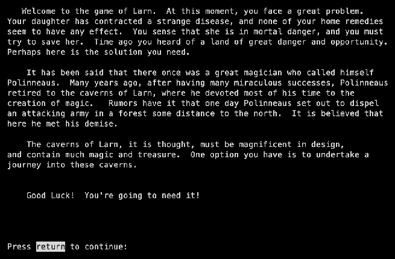
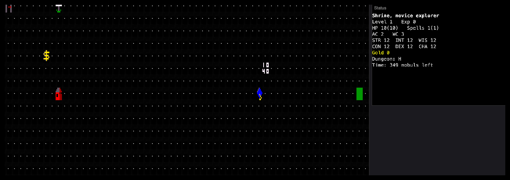
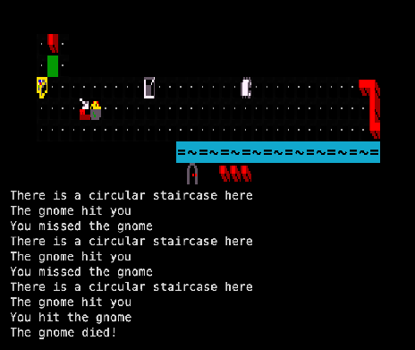
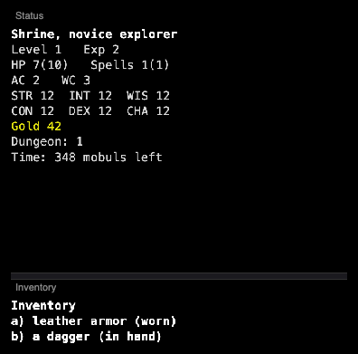

Larn has no parent game. Noah Morgan wrote it in 1986 for Unix, in the spirit of Hack, Rogue and Moria, as its manual says, “but with a different feel and winning criteria”. Kevin Routley continued it up to 12.3 (1991); 12.4.x followed for Windows. In 1987 Phil Cordier turned it into ULarn with real character classes.
The version played here is RL_M, maintained by Gibbon (atsb) since 2014 as if development had never stopped: 26.4 adds spreading water and lava on the volcano levels. See the family tree.
Credits
Noah Morgan
Author (Larn 12.0, 1986)
Don Kneller
MS-DOS port (IBM PC, DEC Rainbow)
Kevin Routley
Larn 12.1 – 12.3
Edwin Denicholas
Larn 12.4.3 for Win32
hymie!
14.1.1
Gibbon (atsb)
Official maintainer, 14.0 to RL_M 26.4
Screenshots

The start: your daughter is ill, and Polinneaus’s caverns may hold the cure.

First steps: the town with its shops, the bank, your home and the dungeon entrance.

A fight on dungeon level 1: “You hit the gnome. The gnome died!”

Inventory: leather armour and a dagger, and 42 gold found on the way.
Trivia
A game of Larn can be finished in one sitting, unlike NetHack or ADOM. (Wikipedia)
Morgan’s original Larn is still part of the NetBSD games collection. (Wikipedia)
Win, and the Larn Revenue Service sends you a tax bill for your “undeclared income” — owed in your next game. (Wikipedia; source: bill.c)
Each win makes the next game harder: the difficulty level rises by one. (Wikipedia)
The disease your daughter has is called dianthroritis. (Wikipedia)
In 2026, at 40, Larn is one of the oldest games still developed from its original code. (Wikipedia)
What's unique
A deadline. The cure must be home before the time (in “mobuls”) runs out.
A town you come back to: a bank that pays interest, a school that raises stats, a trading post, the tax office — one of the first persistent home levels in a roguelike.
Fixed levels. Ten dungeon levels plus a volcano, and each level stays as you left it.
One sitting. A game takes hours, not months.
New in RL_M: water spreads and erodes, lava flows and destroys walls.
Code dive
Language: C, about 20,700 lines. Monsters, objects and spells are plain tables in data.c.
Environment: 1986 Unix terminals with termcap; later MS-DOS, Amiga, Atari ST, Windows. RL_M builds on everything from a DEC VAX to OS/2.
Maze files: some levels come from a hand-drawn maze file (larnmaze); fortune cookies from lfortune.
This port: a curses shim drawing tiles, compiled to WebAssembly. Source: memmaker/larn, upstream atsb/RL_M.
Stats
Thing
Count
Notable ones
Classes
1
No classes: your title rises with your level.
Monsters
56
From bat and gnome to the lama nobe, the disenchantress, the ziller, the platinum dragon and the demon prince; more demon lords below.
Spells
38
Three-letter codes: mle magic missile, vpr vaporize rock, sph sphere of annihilation, gen genocide.
Objects
97
Lance of death, sunsword, orb of dragon slaying, cube of undead control, device of theft prevention, fortune cookies.
Levels
11 + 4
Town, ten dungeon levels, and the volcano below.
Time limit
35,000 moves
Counted in mobuls.
Manual
Larn’s own help file, the intro plus the full command list: read it here (text). It is also the in-game help (?).
You start in town. Stand on a building and press E to enter: the school raises stats, the stores sell armour and weapons, the bank keeps your gold. Escape leaves.
Stand on the dungeon entrance and press E again to go down.
Move with hjklyubn; c casts, i inventory, Enter lists all commands.
Bank your gold: it earns interest while you are away.
Help
There is no walkthrough, but the aim is always the same: find the potion of cure dianthroritis (on the last volcano level, guarded by the demon prince) and get home in time. Tips:
Don’t hurry at first: the time limit is generous. Build levels on the upper floors.
Put gold in the bank early: interest pays for the expensive gear in the Dealer’s shop.
Learn protection and magic missile; cast vaporize rock to cut through walls.
Wizard mode works here: press _. No password: you get stats of 70, a lance of death, all spells, the whole map, and experience of 6,000,000. Wizards are not scored.